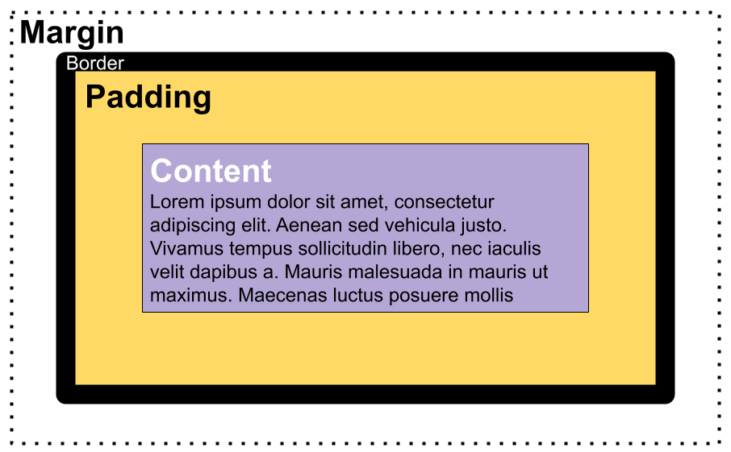

Margins, padding and borders:
A Lot of web development revolves around borders, margins, and padding it's a vital part of CSS and the styling of a webpage they are all wrapped around the content whether it be a picture or text. Borders are what separates the padding and the margin, the margin is what creates white space between the content and the edges of the page, padding is used to align and create whitespace between the border and the content.
